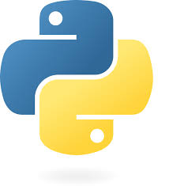

Python
پایتون یک زبان برنامهنویسی سطح بالا، همهمنظوره و بسیار محبوب است که خوانایی و سادگی آن را به یک انتخاب عالی برای مبتدیان و متخصصان تبدیل کرده است. فلسفه پایتون "خوانایی مهم است" میباشد.
این زبان دارای جامعه گستردهای از توسعهدهندگان و کتابخانههای بسیار قدرتمندی در حوزههای مختلف است که توسعه نرمافزار را بسیار سریع و کارآمد میکند.
کاربردهای رایج Python:
- توسعه وب (Backend): با فریمورکهایی مانند Django و Flask.
- علم داده و تحلیل (Data Science): استفاده از کتابخانههایی مانند Pandas, NumPy, Scikit-learn.
- هوش مصنوعی و یادگیری ماشین (AI & ML): با کتابخانههایی مانند TensorFlow, PyTorch, Keras.
- اتوماسیون اسکریپتنویسی: خودکارسازی کارهای تکراری و خستهکننده.
- توسعه اپلیکیشنهای دسکتاپ و بازی: با ابزارهایی مانند Tkinter, PyGame.